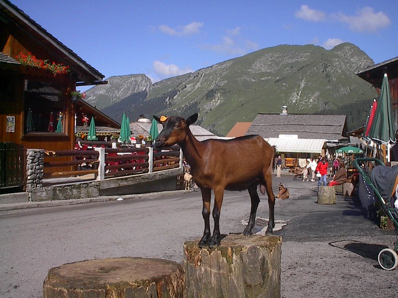

La chèvre Alpine est originaire du massif alpin Suisse et Français. Le berceau de la race se situe en Suisse où elle conserve un cheptel notable. C'est la race la plus répandue en France.
Morphologie : poil ras ; robe de couleur variée passant du blanc pur au blanc tacheté de brun, de fauve, de gris, de noir, de pie ou de roux. Les troupeaux sélectionnés génétiquement présentent une couleur plus homogène, marron avec les extrémités et la ligne dorsale noire. La poitrine est profonde, le bassin large et peu incliné. Les membres sont solides, les articulations sèches et les aplombs corrects. La mamelle est volumineuse, bien attachée, se rétractant bien après la traite.
Les trayons sont distincts de la mamelle, sont dirigés vers l'avant et sensiblement parallèles.
C'est une chèvre de format moyen : 50 kg à 70 kg pour la femelle ; 80 kg à 100 kg pour le mâle.
Rustique, très appréciée pour ses qualités laitières et d'élevage, la race Alpine s'adapte aussi bien aux systèmes d'élevages stabulatoires qu'aux pâtures de basses plaines ou d'altitude.
|  |
Ci-contre, voici une photo d'une chèvre alpine. |